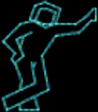
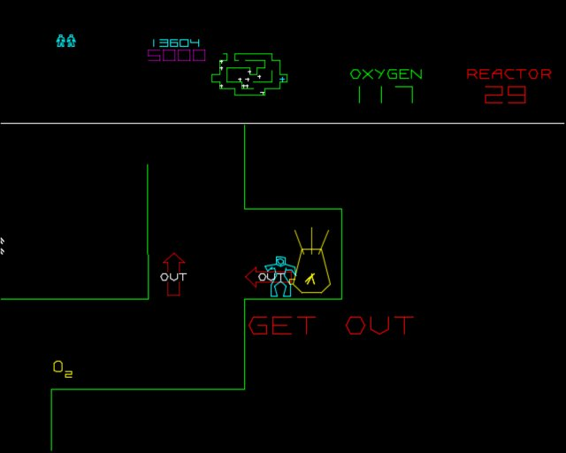

| |
 |
|
Classicgaming.com's "review" of Major Havoc
The following text is in reference to the review of my game Major Havoc at Classicgaming.com (click here to read it). Ok, maybe I am biased because I designed the damn thing, but does Fragmaster have a clue? Some of the great games in arcade history were multiple game plays and did extremely well. One example of that? Major Havoc. How about Gorf and Astro Blaster to name a few others? These games did very well in arcades, and even today have a large followings of people who collect and still play these games. He seems to be reviewing this game based on today's games, and recall it was designed back on the early 80's. He obviously did not play very far into the game either, or simply has no patience for amusing titles. Oh, I'm sorry, Major Havoc does not have a gun, how could "fragmaster" ever enjoy it? First he complains that it has too many different things, then he complains that it does the same thing over and over. Which is it? Replay Magazine actually commented that the pace and learning curve of Major Havoc was one of the best they had ever seen. Something new arrives in each wave, and the game always gets harder. Yes, it has no ending, neither did Asteroids, Pac-Man, Space Invaders, Battle Zone, ...! Lets use his logic and style and review Missile Command: "Some little lines show up on the screen. What are these? Are these supposed to be missiles? At least that is what I believe they are. You roll around a cursor on the screen and press a button. Another line starts from the bottom. What is this? If the two lines meet, a large circle erupts and stops any other lines that touch it. If one of the lines gets to the bottom, they destroy these little stack of boxes that are supposed to represent cities. Lose all of your boxes, you are done. That's it, the same thing over and over!" Wait, how about Asteroids in his style: "What is that annoying sound? It gives me a headache. So there is this small triangle thing in the center of the screen. What is this, a space ship? You can rotate it, thrust it, fire something, and make the ship disappear. The instructions says the ship goes into "hyperspace." Where is that? You move around and shoot at these round things. I think they are supposed to be rocks, or maybe asteroids? And what is this ship shooting? It is powerful enough to break apart the asteroids into multiple smaller asteroids that look exactly the same. And there is no ending. You just do this over and over again." I think you get my point. I could do the same for PacMan, Space Invaders, and Tempest? Time to put fragmaster out to field, this guy has no idea how to design a game, much less what makes a game good or not. How about someone who understand the games of the 80's reviewing games of the 80s? Not this wannabe "fragmaster." From his name is it obvious all he likes is first person shooter games. I have learned from experience that these people are only happy if they can blow the hell out of people or people like images with tons of guns. He would not know a good game if it shot him in the head! Which is not a bad idea. And just to be fair, I have done my load of turkey games. I put them to sleep before anyone ever saw them. Major Havoc was a great game (if I do say so myself) and one I am very proud of. (NOTE FROM BRIAN: "Fragmaster" is no longer with classicgaming.com) |
 |
{kind=link}